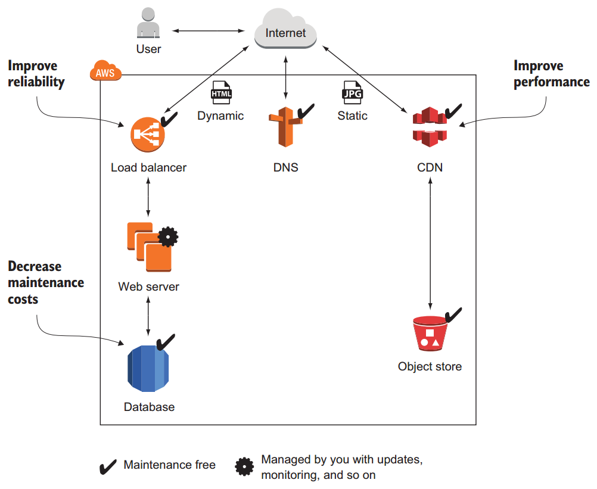
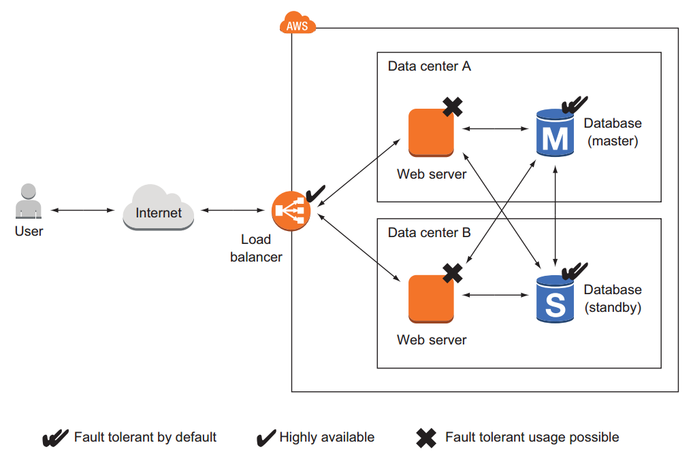
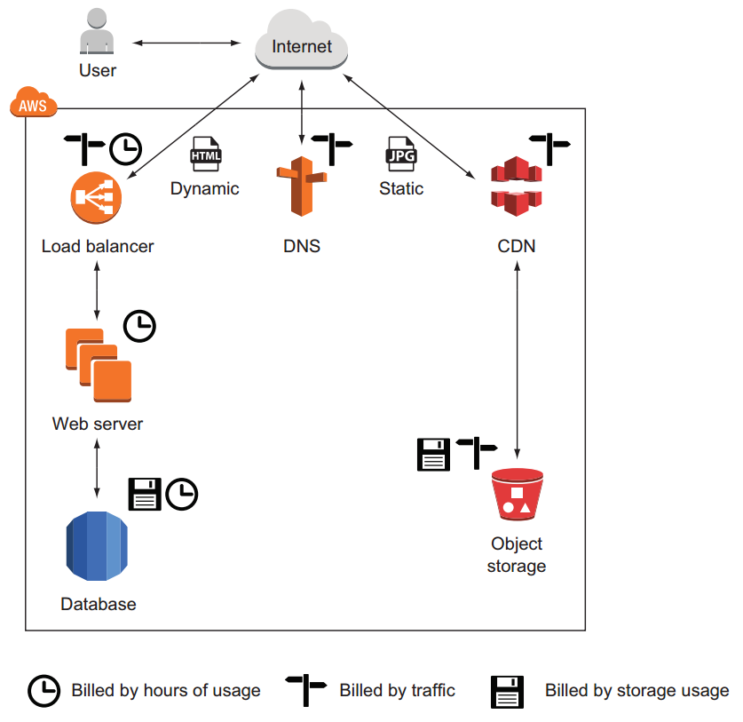
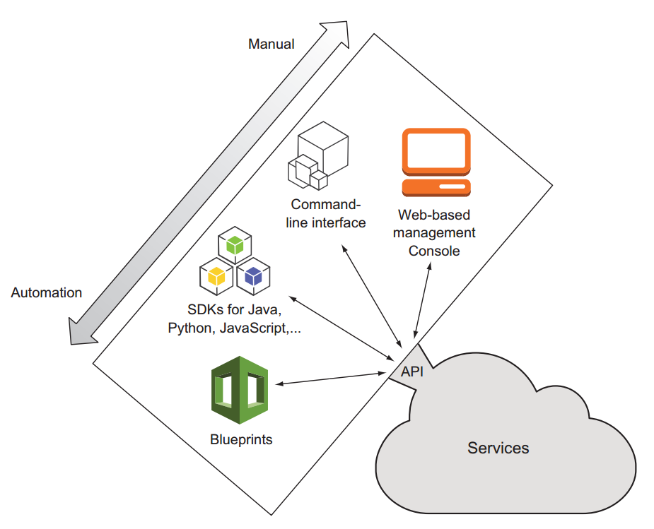
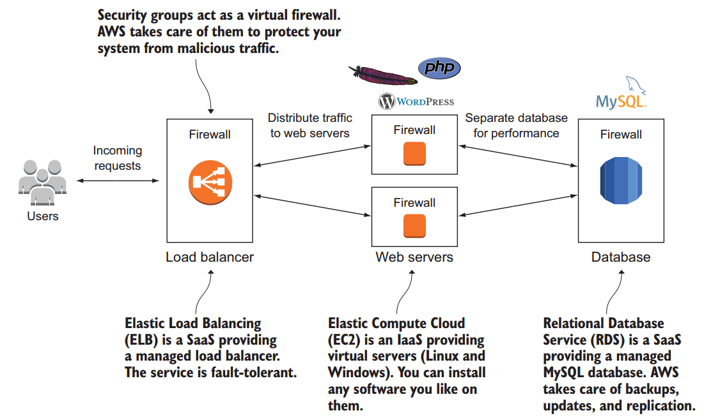

Amazon Web Services in Action
Table of Contents
1 What is Amazon Web Services?
AWS keeps secret the hardware used in its data centers. It probably uses commodity components to save money compared to hardware that charges extra for a brand name. AWS also uses hardware especially developed for its use cases.
1.1 What is cloud computing?
Cloud computing is a model for enabling ubiquitous, convenient, on-demand network access to a shared pool of configurable computing resources (e.g., networks, servers, storage, applications, and services) that can be rapidly provisioned and released with minimal management effort or service provider interaction. The resources in the cloud aren't directly visible to the user; there are layers of abstraction in between. Resources are available on demand in enormous quantities and paid for per use.
Cloud computing services have several classifications:
- Infrastructure as a service (IaaS) - Offers fundamental resources like computing, storage, and networking capabilities, using virtual servers such as Amazon EC2, Google Compute Engine, and Microsoft Azure virtual machines.
- Platform as a service (PaaS) - Provides platforms to deploy custom applications to the cloud, such as AWS Elastic Beanstalk, Google App Engine, and Heroku.
- Software as a service (SaaS) - Combines infrastructure and software running in the cloud, including office applications like Amazon WorkSpaces, Google Apps for Work, and Microsoft Office 365.
Common features of cloud providers:
- Virtual servers (Linux and Windows)
- Object store
- Load balancer
- Message queuing
- Graphical user interface
- Command-line interface
1.2 What can you do with AWS?
1.2.1 Hosting a web shop
Running a web shop on AWS with CDN for better performance, a load balancer for high availability, and a managed database to decrease maintenance costs.

1.2.2 Implementing a fault-tolerant system architecture
There are two type of services on AWS:
- Fault-tolerant services. For example, database service is offered with replication and failover handling.
- Services that can be used in a fault-tolerant way. For example, virtual servers aren't fault tolerant by default, but you can use a load balancer and launch multiple servers in different data centers to achieve fault tolerance.

1.3 How you can benefit from using AWS
1.3.1 Enabling automation
Automation increases reliability and improves efficiency. With AWS's API, everything can be automated: write code to create networks, start virtual server clusters, or deploy a relational database.
Users should concentrate on tasks a human is good at - describing a system - while the computer figures out how to resolve all those dependencies to create the system.
1.3.2 Flexible capacity (scalability)
Flexible capacity frees you from planning. Applications can scale from one server to thousands of servers. You no longer need to predict future capacity needs for the coming months and years.
You could add capacity when traffic grows and remove capacity when traffic shrinks by starting new servers within minutes and throwing them away a few hours after that.
1.4 How much does it cost?
1.4.1 Billing
The user is billed in several ways:
- Based on hours of usage. A server used for 61 minutes is usually counted as 2 hours.
- Based on traffic. Traffic can be measured in gigabytes or in number of requests.
- Based on storage usage. Usage can be either provisioned capacity (for example, 50 GB volume no matter how much is used) or real usage.

1.4.2 Pay-per-use opportunities
The pay-per-use pricing model means you no longer need to make upfront investments in infrastructure. And as big server costs exactly as much as two smaller ones with the same capacity, systems can be divided into smaller parts, which makes fault tolerance more affordable.
1.5 Exploring AWS services
AWS runs software services on top of hardware to provide the cloud. A web interface, the API, acts as an interface between AWS services and applications. You can manage services by sending requests to the API manually via a GUI or programmatically via a SDK. Virtual servers have a peculiarity: they can be connectd to through SSH. Other services, like the NoSQL database service, offer their features through an API and hide everything that's going on behind the scenes.
Categorization of AWS services:
- Compute services offer computing power and memory.
- Database storage manage structured data. Solutions include relational and NoSQL databases.
- Storage is needed to collect, persist, and archive data. Different storage options include: object store or network-attached storage.
- App services offer solutions for common use cases like message queues, topics, and searching large amounts of data to integrate into applications.
- Enterprise services offer independent solutions such as mail servers and directory services.
- Deployment and administration services grant and revoke access to cloud resources, monitor virtual servers, and deploy applications.
- Networking services can be used to define private networks and offer DNS.
1.6 Interacting with AWS

Figure 1: Tools to interact with the AWS API
1.6.1 Command-line interface
CLI is typically used to automate tasks on AWS, for example to automate parts of infrastructure with the help of a continuous integration server like Jenkins.
1.6.2 SDKs
SDKs are used to call AWS from within application. Some services, such as queues and topics, must be used with an SDK in application.
1.6.3 Blueprints
A blueprint is a description of the system containing all services and dependencies. Blueprint is descriptive, it doesn't say anything about the necessary steps or the order to achieve the described system. Admins no longer need to worry about dependencies during system creation - the blueprint automates the entire process.
2 A simple example: WordPress in five minutes
2.1 Creating your infrastructure

By default, WordPress stores media uploads (images) and plugins in a folder called wp-content on the local file system: the server isn't stateless. Using multiple servers isn't possible by default because each request will be served by another server, but media uploads and plugins are stored on only one of the servers. Plugins need to be installed during bootstrapping virtual servers to outsource media uploads to an object-storage service.